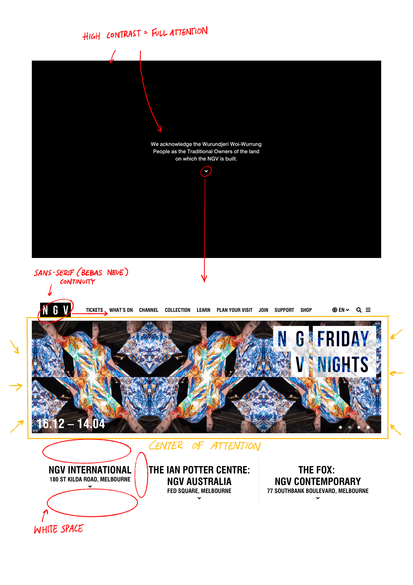
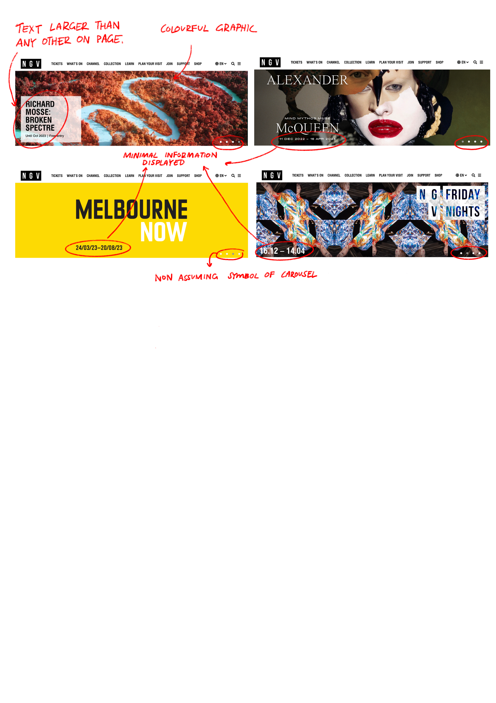
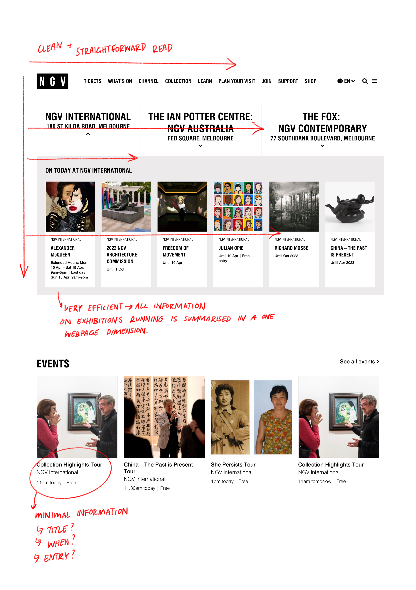
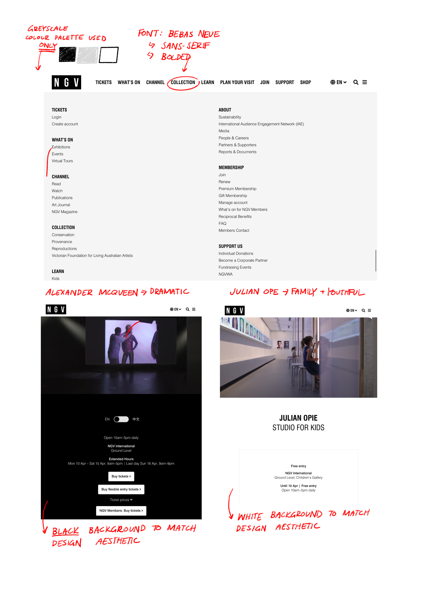
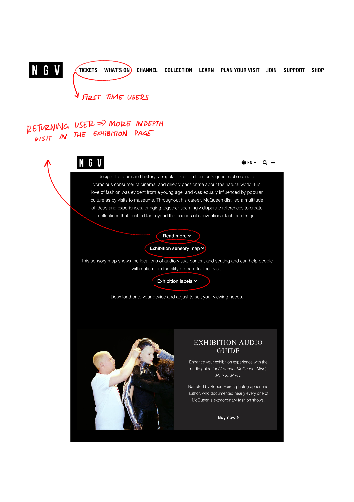
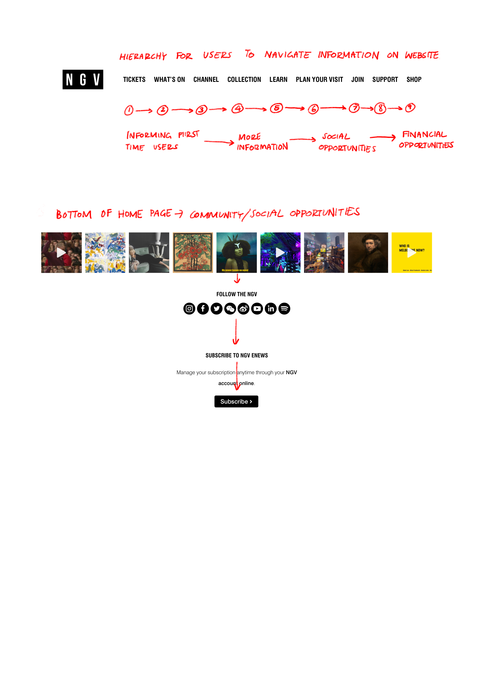
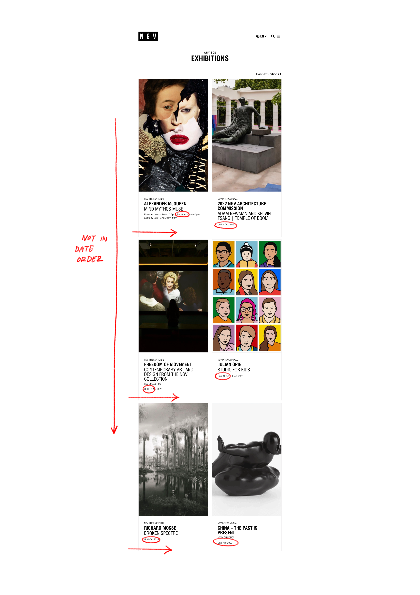

This research project explores the user's interaction of the National Gallery
of Victoria website and analyses the effects of its specific design aesthetics and dynamic web components
upon the user experience.
1. What was the first thing you paid attention to when interacting with the experience?
The very first aspect I focused on when interacting with the National Gallery of Victoria (NGV) website
was the introductory page that outlined an acknowledgement to country. The high contrast between the
white sans-serif styled text and the completely black background was extremely clear and easily legible,
allowing for my complete concentration in digesting that important piece of acknowledgment.
This introductory page quickly transitioned into the main NGV website along with its unique characteristics.
The impression of the website page when first interacting with the experience was its use of sans-serif fonts,
a minimal colour palette and its strong implementation of hierarchy when displaying elements. The black Bebas
Neue type font, white background, and heavy use of white space create a very professional and simplistic appeal.
These characteristics of the website ultimately drew my full attention to the banner which features latest exhibitions
and events taking place at the gallery. By keeping these elements uncomplicated, the colourful graphics utilised for
the banner proved to be more noticeable and memorable.

2. Spend two minutes with the experience and create a list of each of your discrete actions.
When interacting with the website, I noted that the very first action I executed was to scroll up and
down the page. By scrolling down slowly in increments, I was able to fully digest each element that was
displayed. As a result, I noticed that the header section of the website was set in a 'F' pattern layout
while transitioning into a 'Z' layout as I scrolled down.
I then found myself hovering over various elements of the page and found several dynamic web components
like buttons and interactive graphics. Many of these interactions were subtle to fit the simplistic and
minimalistic aesthetic design approach to the website. When hovering over the elements that laid beneath
the 'EXHIBITIONS' section, I noticed that this resulted in the graphics having a slight white tint change,
the text describing the exhibition beside sliding in the direction opposite to the graphic, while the text
detailing the date of the exhibition sliding down. These subtle changes not only balance the layout but allows
me to distinguish each piece of information with my interaction.
I also noticed I would click on any bolded typefaces and symbols that would lead to another page or suggested
a drop-down menu. These came in the form of arrows, buttons in the shape of small, arrayed circles to suggest a
carousel of some sought, and capitalised, bolded type. The cursor would also change from a mouse cursor to a hand
pointer to signal this action.
3. What part of the experience did you spend the most time engaging with?
With regards to the opening page, I spent the most time engaging with the large banner in the header. As the banner
consisted of presenting 4 of the latest exhibitions and events taking place at the NGV, the use of colourful graphics
and text larger than any other typographical element on the page not only drew my attention in firsthand but allowed
me to really play around with every component. The carousel feature provided a clean transition between the different
banners and the limited information made me click on each banner to find out more about the exhibition.
Another aspect of the website I spent a lot of time engaging with was the 'What's On' section at the top contents.
As hierarchy is vital in the NGV layout, I felt like the most important point was finding out 'what was on' at the gallery.
Each exhibition I clicked into first displayed an immersive video of the exhibition, which personalised the experience and
allowed me to absorb the sound, and video editing techniques. This also created a more memorable and meaningful engagement
to each exhibition.

4. What was the most common action in your two-minute interaction with the experience?
The most common action in the interaction of the NGV website was scrolling up and down because of the page layout,
hovering over a variety of dynamic web components, and clicking on these components if they were responsive.
5. What is your impression of the intended primary goal of the interactive experience?
My impression is that the intended goal is to establish a user experience that is clean, professional, and easy to navigate.
As the website is utilised to showcase a variety of different exhibitions and events situated within the National Gallery
of Victoria, the website is essentially a vessel to advertise this information without giving too much away, increase
engagement, and present it to audiences in a way that is easy to digest and leaves them wanting to experience the exhibition
in person.

6. What is your impression of how the interactive experience communicates its primary goal?
To achieve this intended goal of a website that follows a minimalist design aesthetic, NGV communicates this by following a
few design characteristics. A design principle the website follows is a limited colour palette, with black, white, and grey
being the main shades employed. This monochromatic greyscale palette establishes a sophisticated feel to the website. Another
simple change that adds depth to the website is the decision to use either a black or white background that match the physical
backdrops of each exhibition. For example, the exhibition page for “Alexander McQueen” features a black background and white
text to fit the dramatic visual aesthetics of the physical exhibition layout itself. On the other hand, the exhibition page
for Julian Ope's “Studio for Kids” presents a page with a white background and black text to match Ope's exhibition layout
which consists of cartooned murals placed on top of white walls. These subtle details in the visual presentation of the website
strengthens the communication of the NGV in wanting to provide an engagement that is most true.
The hierarchical structure of the webpage layout is also kept in a simple manner that does not distract. By dialling down
its interactivity to essential qualities of scroll up and down, mouse hovering, and clicking, this not only leaves visitors
wanting more but also ensures accessibility amongst all ages to interact with the page in a similar fashion.

7. What is your impression of how the experience should be interacted with over time? (For how long and how many different times)
My personal impression is that visitors utilising the website for the first time will spend a short period of time interacting
with only key information. This would include visiting the home page which summarises key exhibitions and events available, and
the time frame for which it will be running for. I suspect that first time users will interact with the
'TICKETS' and 'WHATS ON' sections from the contents at the top.
Moreover, despite first time visitors having a shorter website interaction, returning visitors will spend longer period engaging
with sections apart from 'TICKETS' and 'WHATS ON'. These returning visitors can utilise the website again afterwards for more
insight into each exhibition, such as revisiting artwork labels, and exhibition themes. Returning website visitors can also
expect to find opportunities in potentially becoming an NGV member, with access to member events, and other online ventures
such as NGV magazine access.

8. What is your impression of how the interactive experience communicates how it should be interacted with over time?
The NGV website offers an interactive experience which utilises the design principle of hierarchy to layout its elements to
ensure users to what information they should consume first and what information they should consume later upon revisiting.
A big clue to this is the contents at the top of the home page which establishes a reading order (left to right) visitors
can draw upon before they have toured the exhibition and afterwards. According to the order, each section builds on top of
one another, and the reading/interaction time needed for these sections as you go down the contents becomes a longer engagement.
This clearly communicates how the NGV has recognised that first time web users will engage with the pages for a short period of
time and therefore provides sections that satisfies this type of experience.
Many museum goers will find that exhibitions at the NGV will further utilise the website as a way for visitors to access more
specific information regarding a certain artwork, artist, designer, and curator etc. These are usually accessible by QR codes
situated within the gallery itself. By incorporating the physicality of a gallery space with the website, users are informed
that there are many ways to utilise the website to strengthen the full NGV viewing experience.
Revisiting users will likely search for more specific information and news regarding the gallery, which will hopefully evolve
to supporting the gallery socially and financially with the 'SHOP' section situated as the end of the reading order as users
scroll down the page. In conclusion, the NGV website provides an interactive experience that evolves and develops over time,
with each returning visit proving to be more in depth, social, and connected.

9. What other media forms (digital or otherwise) does the experience reference?
The user experience of the NGV website takes a level of inspiration from physical gallery layouts, especially in the way it
organises its various elements. Many of the graphical elements utilised to showcase a certain artwork from a particular
exhibition is presented in a rectangular/geometric shape to mimic the shape of a frame used to mount the artworks. These
graphics also incorporate a blurb to the artwork when the mouse hovers over the work that contains similar information
to what a physical gallery would include beside a piece of work (artist, medium, measurements etc). Similarly, colours
are minimal, with only the specific artwork having the most colour to bring a user's attention to the artwork first.
It can also be suggested that the graphics within the website are presented in a way that references social media layouts,
the way the phone camera is hardwired when the camera function is first opened, and the way people usually take photos.
Nowadays, photos are taken in a vertical orientation because of how a phone is held. The NGV website employs more graphics
that present art in a canvas taller than it is wide to mimic how gallery visitors would take photos when in the gallery
itself and provide a user experience that is closest to an actual gallery tour.
The NGV also presents the graphical elements in 'EVENTS' section in a square manner. These advertised events are mainly social
and communal, and the square orientation references social media layouts, such as how Instagram utilises a square shape when
posting images as the 'events' are social themselves.
10. What does this reference or references suggest to you about how you should act when engaging with it?
By implementing a reference to physical gallery layouts, when utilising the NGV website, it suggests that I should also act in
a way that is like how I would consume art in an actual gallery space. Through the site, I am engaging with the information in
an attentive and considerate way and taking my time to inspect each graphical element presented in a precise manner. The layout
of the website suggests that I should not rush when scrolling and instead explore my reactions to each section of the page and
its information regarding what exhibitions and events are currently featured at the NGV.
The reference to social media layouts also suggests that the gallery and its artworks is an environment that should be shared
amongst peers. When engaging with the graphics of the website, users take note that the NGV is wanting to exhibit both
physically and digitally a space and experience that is perfect to connect with others and share its information with the
wider community.
11. What does this reference or references suggest to you about how you should feel when engaging with it?
As the website presents its information with reference to physical gallery spaces, the NGV creates a digital space where there
is an opportunity for users to reflect and be critical when engaging with the variety of exhibitions and events on offer.
The use of white space in the web design that is present in physical gallery layouts strengthens this calm and serene
emotional reaction, allowing users to take a breath when consuming information. Similarly, there is a feeling of elegance
when viewing the web page which motivates users to be open to discovering all exhibitions on offer.
The aspect of social media visual qualities being referenced in the design of the NGV home page, there is a sense of closeness
and connectiveness to the overall user experience. The specific orientations of the graphics are familiar to viewers and are
displayed in a simplistic geometric manner to strengthen this sense of familiarity while also contributing to the overall
relaxing atmosphere of the webpage design. Similarly, to social media layouts, the NGV home page limits its text to summarised
captions and larger emphasis on the graphics to not give too much power to the user. By employing a sense of mystery, users are
motivated to be curious to find out more.
12. What is the most frustrating element of the interaction to you and what makes it frustrating?
The most frustrating element of the interaction is the way the exhibitions are laid out in an order that is random in terms of
when it will be unavailable or open to the public. The order of the exhibition dates does not go down in an order from ending
soon to later in the year.
This is frustrating as users are not immediately informed of what is available in the gallery now
and what will be coming later in the year and therefore a certain level of clarity is lost as a result. A simple change would
be employing an order that first exhibitions that are open for tour currently and will be ending first and to the last
exhibition that is yet to open soon.

13. What is the most satisfying element of the interaction to you and what makes it satisfying?
The most satisfying element of the interaction is how all visual elements and dynamic components follow a minimalistic design
aesthetic. All elements on the page have clean mouse interactions and font types and keeps to a professional and grid layout
where similar elements are spaced equally.
This is extremely satisfying as these simple design choices do not distract from the presentation of information and this
continuity establishes a sense of reliability in the interactive experience.